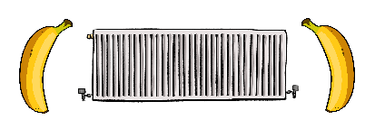

Del 1: Att bygga ett hemside-skelett
Ställ fram en kopp kaffe och inta positionen ”datanörd med gorillanacke”, vi ska börja med HTML! I första lektionen ska vi göra en enkel hemsida men först måste jag förklara lite hur allt fungerar. HTML består av element med innehåll som datorer kan läsa, dessa omringas av vänster- och högerbanan (eller vinkelparanteser som de lärda säger). De flesta taggar behöver även en sluttagg som föregås av ett snedtreck, men det finns undantag som <!DOCTYPE>.
De mest grundläggande elementen inom html förutom doctype är html, title samt body. Html är själva grunden på hemsidan, title ger sidan ett namn och body är själva "kroppen" där innehåll som vi människor kan se ska vara. Innehållet kan bland annat bestå av text, bilder, videor och länkar men vi börjar med en rubrik följt av en paragraf med text. Öppna nu filen du gjorde i introt och klistra in nedanstående.
Gissa vad du precis gjorde? En hemsida! Ovanstående är själva grunden för en hemsida. Spara filen och klicka sedan på den i mappen. Om allt stämmer ska webbläsaren öppna en sida vid namn "Min sida!" med en rubrik samt en paragraf.
- Tänk på att alla sluttaggar måste börja med snedstreck / annars blir datorn förvirrad.
- Prova att lägga till en ny paragraf och ändra titeln på hemsidan till något roligare.
- h1 ger en stor rubrik som har störst prio medans h6 ger en liten med lägst prio.
- Glöm inte att rubriker och paragrafer måste vara inom body på samma sätt som title är inom head.
- Allt förutom DOCTYPE ska vara INOM html.
- Tänk på att du alltid måste spara filen i Notepad++ och sedan ladda om sidan i webbläsaren (t.ex. Chrome) varje gång du ändrar något ifall du vill se något resultat.
| <!DOCTYPE html> | Berättar för datorn att dokumentet är ett html-dokument. |
| <html> | Berättar ÅTER för den dumma datorn att detta är ett html-dokument. |
| <head> | Innehåller allt som webbläsaren vill veta om hemsidan. |
| <title> | Visar namn på sidan i webbläsare, sökmotorer och bokmärken. |
| <body> | Själva innehållet på sidan. |
| <h1> | Sidans första, viktigaste rubrik. |
| <p> | En paragraf med text. |